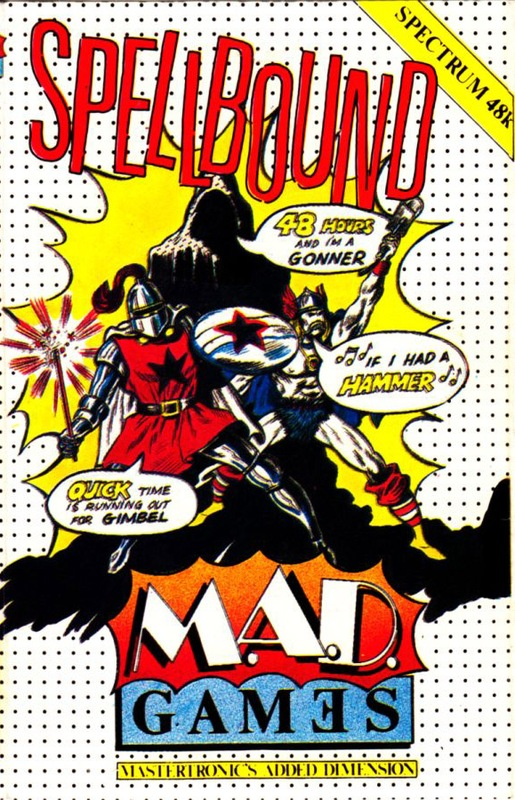
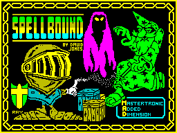
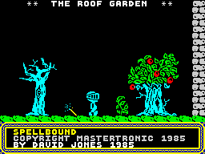
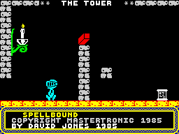

Spellbound


{kind=link}

| Publisher: | Mastertronic |
| Price: | £2.99 |
| Year: | 1985 |
| Source: | CRASH, Issue 24 |

As a continuation of his adventures in Finders Keepers, Magic Knight now reappears in a new Mastertronic release, Spellbound. Part of the new Mad Games range, Spellbound is a true graphic adventure.
Magic Knight’s mentor and teacher, Gimbal the Wizard, has accidentally managed to bind you and seven other characters within a summon spell. The spell was intended to be an aid to Gimbal’s quest for better tasting rice pudding. Due to a slight typographical error that arose when the incantations were translated from ancient English to slightly less ancient English, things went a little bit wrong. Now our hero is trapped within a strange and unfamiliar land with a bunch of people from different slices of history. Being the brave good guy among the collection of oddities it’s down to Magic Knight to return the various peoples to their respective time/space zones. First on your list of major things to do is to release Gimbal from a self inflicted white out spell but, as in any good adventure, there’s a number of smaller tasks to perform first.

Though Spellbound looks very similar to any run of the mill left/right and jump game, pressing fire soon shatters that illusion. Based around a windowing system by the name of Windowvision, fire opens up the primary menu replete with a list of options available to Magic Knight. A pointer controlled by the up and down keys highlights various options as you move it about, and fire takes you to the sub menu for that option. For each option on the menu there’s a corresponding button on the keyboard — thus avoiding any hassle for people who’re a bit kack-handed when it comes to using the pointer.
When you change to a sub window it opens up over the main one and a pointer appears on the sub directory. Using this system, the amount of options available to you easily equals those within many text adventures. As you progress through the game the options and actions open to you change, allowing Magic Knight to take advantage of any new objects or powers he may have acquired — extra options are highlighted in white.

Apart from using the menu system, you can move Magic Knight around the screens with left, right and jump. Obviously Magic Knight has developed some pretty impressive leg muscles since his last game: jump causes him to take a real mega leap skywards.
Any object or character you may come across can be examined via the main menu. While a character is being examined, a small screen with a graphic of the character under scrutiny appears. Such details as strength, happiness, stamina, spell power and food level are detailed. You can even examine yourself; very handy, since being a brave knight expends strength quite a bit and if it reaches zero the game's over. When it comes to examining objects, a graphic of the object under scrutiny is displayed together with details on the four different attributes possessed by objects: weight, magic power, read and drop status. The read and drop information tell whether you can drop the object you’ve acquired or use the read function on it to glean information. The weight reading can be critical as well. The more the the knight carries, the quicker his strength is sapped. If Magic Knight is too weak then he won’t be able to pick up heavy objects.

There’s a large strategic element to the game. The other captives of the summon spell wander about in a bit of a daze and need looking after. You need to command characters to do things for their own good, and you have to get hold of the wand of command before the option which allows you to tell people what to do appears on your menu. Since the characters don’t have the sense to fend for themselves, it’s up to you to tell them to go away, eat, drink, and be happy.
If your fellow captives aren’t kept in good health they may well die.... The characters also have to be kept happy or it’s likely they get in a bit of a sulk and be loathe to obey any commands that may be issued to them. Other people may well be in possession of objects you need but understandably they like to keep hold of any thing they’ve got. Command a character to go to sleep and anything they have can be easily pilfered. When a character is asleep it’s also possible to give them something they wouldn’t normally accept.
The domain in which the spell of summoning has trapped the cast of characters is split into seven floors, each spanning around seven or eight screens. To travel between floors the Knight has to use the lift found at the extreme left hand side of each floor.
Some objects can be found which can’t actually be used — they do offer clues, however, and the clue they contain can usually be liberated with the read function. A few totally useless, though amusing, objects litter the place as well. Upon starting, Magic Knight’s only possession is an advert: read this and you’re informed that David Jones created Spellbound and suggests going out and buying Finders Keepers. Another addition to the Knight’s worries is that there’s only 48 hours to complete his task. Oh dear. Better get going...
CRITICISM
‘I’m always a bit cynical of software houses’ claims to produce true graphical adventures but it seems that Mastertronic have actually come up with the goods. Finders Keepers was excellent but Spellbound is superlative. Windowvision is about the best selection method for using and interacting with objects and characters I’ve seen yet. It blows away both Frankie and Shadowfire making them both seem awkward and outdated. Graphically, the game is well above average: the movement of Magic Knight as he athletically leaps about is great. Convincing gravity too. Overall, about the best game of its type on the Spectrum to date. Even if it were priced around the ten pound mark I’d still recommend it as a bargain but for £2.99 you’d be MAD not to buy it!’
‘Finders Keepers was Mastertronic’s best game until now. David Jones has improved on the features in Finders Keepers and has come up with a first rate game. The graphics are generally good, but not some of the best around. What makes this game is the presentation. It’s very easy to play without actually reading the instructions and subsequently it doesn’t take long before you are addicted. The menus that appear make the game easy to understand and they cut out the need for mega quick reactions which other arcade adventures depend on. If you’ve got £2.99 to spare then get this, you won’t regret it!’
‘My blue knight materialised: ‘What now?’ I cried! But then as I started bouncing all over the millions of screens, I was really getting into the feel of it; when I pulled myself away from it, I could easily say I was well and truly hooked. Fab sound and mega-brill windowing with the odd bit of great graphics gave me the feeling that this was going to be a smash! And when they told me that it was only £2.99 I really freaked out! Next time you find yourself with three quid, this is something you must get.’
COMMENTS
| Control keys: | A/Z up, down N/M left, right and space for fire |
| Joystick: | Kempston |
| Keyboard play: | Very responsive |
| Use of colour: | A bit of attribute clash, but hardly noticeable. Very good |
| Graphics: | Big, bold and detailed |
| Sound: | Not a lot but what it does do is good |
| Skill levels: | 1 |
| Screens: | 50 |
| General rating: | An outstanding game, especially for the money |
| Use of computer: | 96% |
| Graphics: | 89% |
| Playability: | 91% |
| Getting started: | 92% |
| Addictive qualities: | 89% |
| Value for money: | 98% |
| Overall: | 95% |